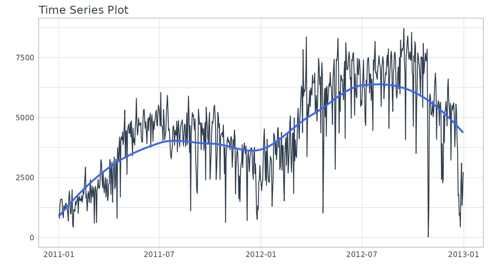
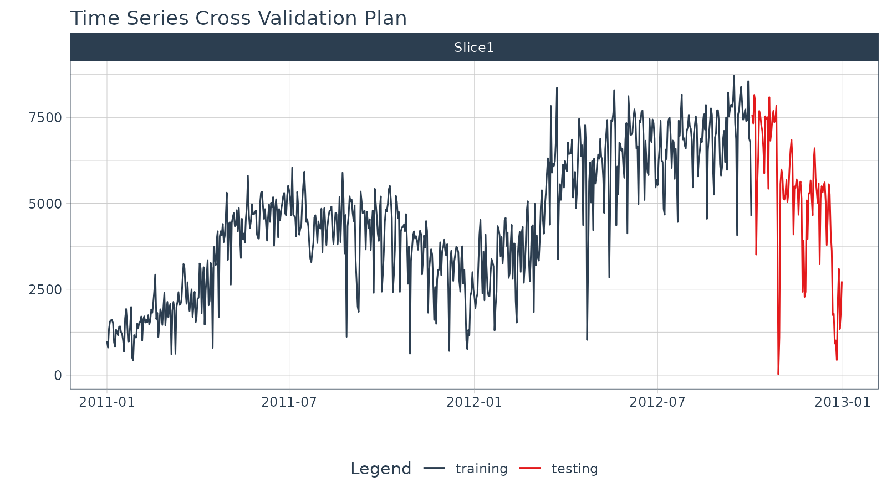
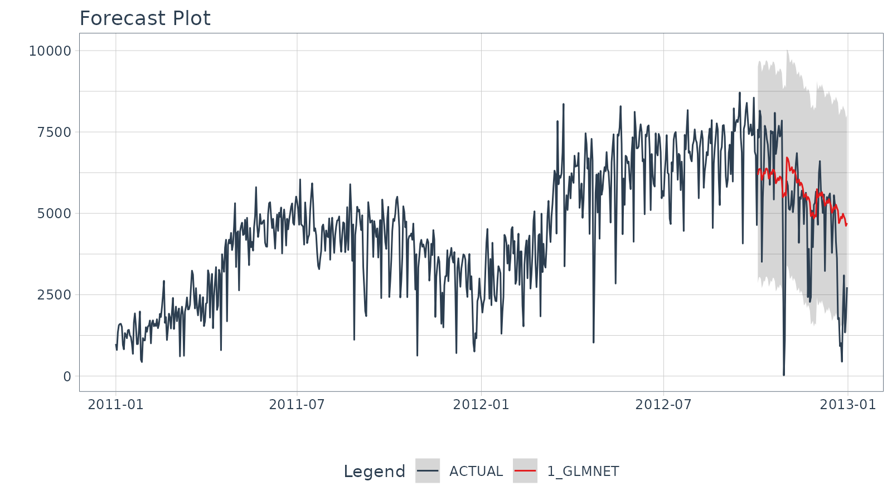
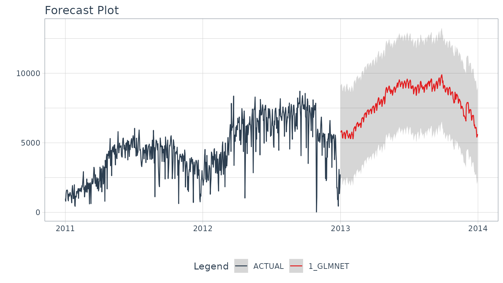

Time Series Machine Learning
Matt Dancho
2023-12-28
Source:vignettes/TK03_Forecasting_Using_Time_Series_Signature.Rmd
TK03_Forecasting_Using_Time_Series_Signature.RmdThis vignette covers Machine Learning for Forecasting using the time-series signature, a collection calendar features derived from the timestamps in the time series.
Introduction
The time series signature is a collection of useful features that describe the time series index of a time-based data set. It contains a wealth of features that can be used to forecast time series that contain patterns.
In this vignette, the user will learn methods to implement machine
learning to predict future outcomes in a time-based data set. The
vignette example uses a well known time series dataset, the Bike Sharing
Dataset, from the UCI Machine Learning Repository. The vignette follows
an example where we’ll use timetk to build a basic Machine
Learning model to predict future values using the time series signature.
The objective is to build a model and predict the next six months of
Bike Sharing daily counts.
Data
We’ll be using the Bike Sharing Dataset from the UCI Machine Learning Repository.
Source: Fanaee-T, Hadi, and Gama, Joao, ‘Event labeling combining ensemble detectors and background knowledge’, Progress in Artificial Intelligence (2013): pp. 1-15, Springer Berlin Heidelberg
# Read data
bike_transactions_tbl <- bike_sharing_daily %>%
select(date = dteday, value = cnt)
bike_transactions_tbl## # A tibble: 731 × 2
## date value
## <date> <dbl>
## 1 2011-01-01 985
## 2 2011-01-02 801
## 3 2011-01-03 1349
## 4 2011-01-04 1562
## 5 2011-01-05 1600
## 6 2011-01-06 1606
## 7 2011-01-07 1510
## 8 2011-01-08 959
## 9 2011-01-09 822
## 10 2011-01-10 1321
## # ℹ 721 more rowsNext, visualize the dataset with the plot_time_series()
function. Toggle .interactive = TRUE to get a plotly
interactive plot. FALSE returns a ggplot2 static plot.
bike_transactions_tbl %>%
plot_time_series(date, value, .interactive = interactive)
Train / Test
Next, use time_series_split() to make a train/test
set.
- Setting
assess = "3 months"tells the function to use the last 3-months of data as the testing set. - Setting
cumulative = TRUEtells the sampling to use all of the prior data as the training set.
splits <- bike_transactions_tbl %>%
time_series_split(assess = "3 months", cumulative = TRUE)Next, visualize the train/test split.
-
tk_time_series_cv_plan(): Converts the splits object to a data frame -
plot_time_series_cv_plan(): Plots the time series sampling data using the “date” and “value” columns.
splits %>%
tk_time_series_cv_plan() %>%
plot_time_series_cv_plan(date, value, .interactive = interactive)
Modeling
Machine learning models are more complex than univariate models (e.g. ARIMA, Exponential Smoothing). This complexity typically requires a workflow (sometimes called a pipeline in other languages). The general process goes like this:
- Create Preprocessing Recipe
- Create Model Specifications
- Use Workflow to combine Model Spec and Preprocessing, and Fit Model
Recipe Preprocessing Specification
The first step is to add the time series signature to the
training set, which will be used this to learn the patterns. New in
timetk 0.1.3 is integration with the recipes R
package:
The
recipespackage allows us to add preprocessing steps that are applied sequentially as part of a data transformation pipeline.The
timetkhasstep_timeseries_signature(), which is used to add a number of features that can help machine learning models.
library(recipes)
# Add time series signature
recipe_spec_timeseries <- recipe(value ~ ., data = training(splits)) %>%
step_timeseries_signature(date) We can see what happens when we apply a prepared recipe
prep() using the bake() function. Many new
columns were added from the timestamp “date” feature. These are features
we can use in our machine learning models.
## # A tibble: 641 × 29
## date value date_index.num date_year date_year.iso date_half
## <date> <dbl> <dbl> <int> <int> <int>
## 1 2011-01-01 985 1293840000 2011 2010 1
## 2 2011-01-02 801 1293926400 2011 2010 1
## 3 2011-01-03 1349 1294012800 2011 2011 1
## 4 2011-01-04 1562 1294099200 2011 2011 1
## 5 2011-01-05 1600 1294185600 2011 2011 1
## 6 2011-01-06 1606 1294272000 2011 2011 1
## 7 2011-01-07 1510 1294358400 2011 2011 1
## 8 2011-01-08 959 1294444800 2011 2011 1
## 9 2011-01-09 822 1294531200 2011 2011 1
## 10 2011-01-10 1321 1294617600 2011 2011 1
## # ℹ 631 more rows
## # ℹ 23 more variables: date_quarter <int>, date_month <int>,
## # date_month.xts <int>, date_month.lbl <ord>, date_day <int>,
## # date_hour <int>, date_minute <int>, date_second <int>, date_hour12 <int>,
## # date_am.pm <int>, date_wday <int>, date_wday.xts <int>,
## # date_wday.lbl <ord>, date_mday <int>, date_qday <int>, date_yday <int>,
## # date_mweek <int>, date_week <int>, date_week.iso <int>, date_week2 <int>, …Next, I apply various preprocessing steps to improve the modeling behavior. If you wish to learn more, I have an Advanced Time Series course that will help you learn these techniques.
recipe_spec_final <- recipe_spec_timeseries %>%
step_fourier(date, period = 365, K = 5) %>%
step_rm(date) %>%
step_rm(contains("iso"), contains("minute"), contains("hour"),
contains("am.pm"), contains("xts")) %>%
step_normalize(contains("index.num"), date_year) %>%
step_dummy(contains("lbl"), one_hot = TRUE)
juice(prep(recipe_spec_final))## # A tibble: 641 × 47
## value date_index.num date_year date_half date_quarter date_month date_day
## <dbl> <dbl> <dbl> <int> <int> <int> <int>
## 1 985 -1.73 -0.869 1 1 1 1
## 2 801 -1.72 -0.869 1 1 1 2
## 3 1349 -1.72 -0.869 1 1 1 3
## 4 1562 -1.71 -0.869 1 1 1 4
## 5 1600 -1.71 -0.869 1 1 1 5
## 6 1606 -1.70 -0.869 1 1 1 6
## 7 1510 -1.70 -0.869 1 1 1 7
## 8 959 -1.69 -0.869 1 1 1 8
## 9 822 -1.68 -0.869 1 1 1 9
## 10 1321 -1.68 -0.869 1 1 1 10
## # ℹ 631 more rows
## # ℹ 40 more variables: date_second <int>, date_wday <int>, date_mday <int>,
## # date_qday <int>, date_yday <int>, date_mweek <int>, date_week <int>,
## # date_week2 <int>, date_week3 <int>, date_week4 <int>, date_mday7 <int>,
## # date_sin365_K1 <dbl>, date_cos365_K1 <dbl>, date_sin365_K2 <dbl>,
## # date_cos365_K2 <dbl>, date_sin365_K3 <dbl>, date_cos365_K3 <dbl>,
## # date_sin365_K4 <dbl>, date_cos365_K4 <dbl>, date_sin365_K5 <dbl>, …Model Specification
Next, let’s create a model specification. We’ll use a Elastic Net
penalized regression via the glmnet package.
model_spec_lm <- linear_reg(
mode = "regression",
penalty = 0.1
) %>%
set_engine("glmnet")Workflow
We can mary up the preprocessing recipe and the model using a
workflow().
workflow_lm <- workflow() %>%
add_recipe(recipe_spec_final) %>%
add_model(model_spec_lm)
workflow_lm## ══ Workflow ════════════════════════════════════════════════════════════════════
## Preprocessor: Recipe
## Model: linear_reg()
##
## ── Preprocessor ────────────────────────────────────────────────────────────────
## 6 Recipe Steps
##
## • step_timeseries_signature()
## • step_fourier()
## • step_rm()
## • step_rm()
## • step_normalize()
## • step_dummy()
##
## ── Model ───────────────────────────────────────────────────────────────────────
## Linear Regression Model Specification (regression)
##
## Main Arguments:
## penalty = 0.1
##
## Computational engine: glmnetTraining
The workflow can be trained with the fit() function.
if (requireNamespace("glmnet")) {
workflow_fit_lm <- workflow_lm %>% fit(data = training(splits))
}Hyperparameter Tuning
Linear regression has no parameters. Therefore, this step is not needed. More complex models have hyperparameters that require tuning. Algorithms include:
- Elastic Net
- XGBoost
- Random Forest
- Support Vector Machine (SVM)
- K-Nearest Neighbors
- Multivariate Adaptive Regression Spines (MARS)
If you would like to learn how to tune these models for time series, then join the waitlist for my advanced Time Series Analysis & Forecasting Course.
Forecasting with Modeltime
The Modeltime Workflow is designed to speed up model
evaluation and selection. Now that we have several time series models,
let’s analyze them and forecast the future with the
modeltime package.
Modeltime Table
The Modeltime Table organizes the models with IDs
and creates generic descriptions to help us keep track of our models.
Let’s add the models to a modeltime_table().
if (rlang::is_installed("modeltime")) {
model_table <- modeltime::modeltime_table(
workflow_fit_lm
)
model_table
}## # Modeltime Table
## # A tibble: 1 × 3
## .model_id .model .model_desc
## <int> <list> <chr>
## 1 1 <workflow> GLMNETCalibration
Model Calibration is used to quantify error and
estimate confidence intervals. We’ll perform model calibration on the
out-of-sample data (aka. the Testing Set) with the
modeltime::modeltime_calibrate() function. Two new columns
are generated (“.type” and “.calibration_data”), the most important of
which is the “.calibration_data”. This includes the actual values,
fitted values, and residuals for the testing set.
calibration_table <- model_table %>%
modeltime::modeltime_calibrate(testing(splits))
calibration_table## # Modeltime Table
## # A tibble: 1 × 5
## .model_id .model .model_desc .type .calibration_data
## <int> <list> <chr> <chr> <list>
## 1 1 <workflow> GLMNET Test <tibble [90 × 4]>Forecast (Testing Set)
With calibrated data, we can visualize the testing predictions (forecast).
- Use
modeltime::modeltime_forecast()to generate the forecast data for the testing set as a tibble. - Use
modeltime::plot_modeltime_forecast()to visualize the results in interactive and static plot formats.
calibration_table %>%
modeltime::modeltime_forecast(actual_data = bike_transactions_tbl) %>%
modeltime::plot_modeltime_forecast(.interactive = interactive)
Accuracy (Testing Set)
Next, calculate the testing accuracy to compare the models.
- Use
modeltime::modeltime_accuracy()to generate the out-of-sample accuracy metrics as a tibble. - Use
modeltime::table_modeltime_accuracy()to generate interactive and static
calibration_table %>%
modeltime::modeltime_accuracy() %>%
modeltime::table_modeltime_accuracy(.interactive = interactive)| Accuracy Table | ||||||||
| .model_id | .model_desc | .type | mae | mape | mase | smape | rmse | rsq |
|---|---|---|---|---|---|---|---|---|
| 1 | GLMNET | Test | 1244.11 | 331.5 | 1.34 | 29.2 | 1689.76 | 0.47 |
Refit and Forecast Forward
Refitting is a best-practice before forecasting the future.
-
modeltime::modeltime_refit(): We re-train on full data (bike_transactions_tbl) -
modeltime::modeltime_forecast(): For models that only depend on the “date” feature, we can useh(horizon) to forecast forward. Settingh = "12 months"forecasts then next 12-months of data.
calibration_table %>%
modeltime::modeltime_refit(bike_transactions_tbl) %>%
modeltime::modeltime_forecast(h = "12 months", actual_data = bike_transactions_tbl) %>%
modeltime::plot_modeltime_forecast(.interactive = interactive)
Summary
Timetk is part of the amazing Modeltime Ecosystem for time series forecasting. But it can take a long time to learn:
- Many algorithms
- Ensembling and Resampling
- Feature Engineering
- Machine Learning
- Deep Learning
- Scalable Modeling: 10,000+ time series
Your probably thinking how am I ever going to learn time series forecasting. Here’s the solution that will save you years of struggling.
Take the High-Performance Forecasting Course
Become the forecasting expert for your organization
High-Performance Time Series Course
Time Series is Changing
Time series is changing. Businesses now need 10,000+ time series forecasts every day. This is what I call a High-Performance Time Series Forecasting System (HPTSF) - Accurate, Robust, and Scalable Forecasting.
High-Performance Forecasting Systems will save companies by improving accuracy and scalability. Imagine what will happen to your career if you can provide your organization a “High-Performance Time Series Forecasting System” (HPTSF System).
How to Learn High-Performance Time Series Forecasting
I teach how to build a HPTFS System in my High-Performance Time Series Forecasting Course. You will learn:
-
Time Series Machine Learning (cutting-edge) with
Modeltime- 30+ Models (Prophet, ARIMA, XGBoost, Random Forest, & many more) -
Deep Learning with
GluonTS(Competition Winners) - Time Series Preprocessing, Noise Reduction, & Anomaly Detection
- Feature engineering using lagged variables & external regressors
- Hyperparameter Tuning
- Time series cross-validation
- Ensembling Multiple Machine Learning & Univariate Modeling Techniques (Competition Winner)
- Scalable Forecasting - Forecast 1000+ time series in parallel
- and more.
Become the Time Series Expert for your organization.